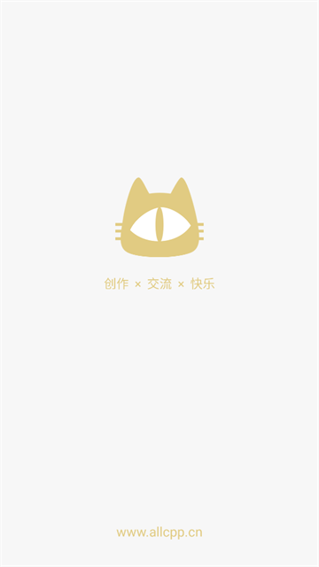
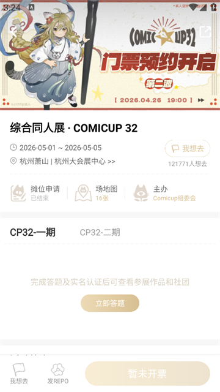

第一次逛同人展？CPP 无差别同人站 5 分钟上手
刚入坑同人圈想逛 COMICUP，却不知道从哪下手？这篇带你从零搞定购票、刷本、加心愿单，连老粉都在用的新手路径一起讲明白。
这篇能带你从完全不懂到用起来，不需要任何基础——哪怕你以前连"同人志"是什么都没听说过，跟着走完下面几步，下次 CP 开展你也能轻车熟路。
先说一件最容易让人误会的事：此 CPP 非 C++ 编程语言。这里说的 CPP 是「COMICUP 无差别同人站」，国内最大的同人展线上平台。如果你想逛 COMICUP（上海 CP 展），或者追某个画师的新刊，这就是你绕不开的那个 App，可以直接去cpp官网看看。

它到底是干嘛的——一个生活化类比
把 CPP 想象成一个专门给同人展用的"大众点评 + 购票 + 朋友圈"三合一 App：
- 大众点评那一面：参展的几千个社团提前把自己要卖的同人志、周边、徽章都拍好照片登上去，你在家躺在床上就能把几个小时才能逛完的摊位全看一遍，知道哪个社团出了新刊、哪个限定版有特典；
- 购票那一面：CP 的电子票就在这里买，绑实名、扫二维码检票，不用排队；
- 朋友圈那一面：你关注的社团和画手会在上面发帖更新进度，展会前后有什么消息、有没有通贩复刊，刷一下就知道。
核心逻辑很简单：展前逛本、展中扫摊、展后跟踪——三个阶段，CPP 全程陪着你。
五分钟上手：从下载到第一次跑通
别担心，整个流程真的不复杂。跟着一步一步来：
第一步：下载和注册
去手机应用商店搜「无差别同人站」就能找到，或者直接从cpp下载拿安装包，图标是一只小刺猬的那个就是官方版。下载完打开，用手机号注册——必须实名，这是 CPP 的硬性规定，购票和检票都跟实名信息绑在一起，填的时候注意别写错名字和身份证号。
第二步：答题和入场权限
注册完不是立刻就能刷全站内容的。CPP 会让你做几道简单的题（关于版权、同人规则、社区规范之类的），答完通过答题审核才能看到完整的展会内容。放心，题不难，而且可以反复答，选错了也能改。这一步是为了让新人先了解同人圈的基本规矩，避免闹不愉快。
第三步：找到你感兴趣的展会
首页会列出当前和最近即将开展的 COMICUP 活动，点进去就是展会详情页。这里能看到参展社团名录、作品刊登、摊位图等信息。如果你不是冲着某一届 CP 来的，也可以逛「发现」页，按"粮坑"（也就是兴趣分类，比如原神、明日方舟、东方 Project）刷全站内容，不限展会。

第四步：搜你追的社团或作品
这一步是整个 CPP 最有用的功能。顶部有搜索栏，你可以直接搜作品名（比如想找《XX》相关的同人志）、社团名、或者画手的 ID。搜到之后点进去看他们本届展会带了哪些新刊、什么价格、有没有线上预约或者仅限现场。
第五步：加收藏或心愿单
看到想要的本子，直接点进去详情页，右下角一般有收藏按钮。也可以加到「心愿单」里——心愿单更像一个待办清单，展前可以对照着规划路线，现场扫摊的时候掏出手机一条一条划掉，效率比瞎逛高出不知道多少。
上手后先玩这三个功能
搞定上面五步，你已经是 CPP 的合格用户了。但别急着停，下面三个功能是老粉最常用的，新手越早用上越好。
功能一：心愿单——别等到现场才想起来要买什么
心愿单不只是个收藏夹。你会发现它最大的用处是在开展前一晚：打开 APP，对着心愿单逐个核对每样商品的状态——有没有标记"仅限现场"、有没有特典需要满足条件、价格是多少、对应摊位号是几号。这五分钟核对能帮你在现场节省至少一小时的盲目搜索。
别忘了把摊位号记进每个收藏的备注里。开展当天摊位图公布后，对着摊位号走过去，比在几千个摊位里瞎逛效率高太多。
功能二：关注和订阅流——只看你关心的，别让算法瞎掺和
CPP 有个叫「关注和订阅」的页面，它的特别之处在于：这里只出现你主动关注的内容，算法完全不插手。顶部有三个筛选器可以切换：
- 只看关注：关注对象的一切动态，日常刷着玩；
- 只看展品：只看制品和刊登信息——展前一晚切到这个，快速过一遍所有目标新刊的状态；
- 只看图文：只看图文类帖子，适合"吃粮"模式（就是看创作 REPO、同人图这些）。
老粉的经验是：展前两周常驻「只看展品」，新刊刊登一条不漏；展后切回「只看关注」，等社团的通贩、再版公告。订阅流还有更细的玩法想了解的话，可以去cpp文档查。
功能三：购票和实名——确认好再点"立即支付"
终于说到买票了。在展会详情页里找到购票入口，选好日期（Day1 和 Day2 是两张不同的票，别买错），填好实名信息，付钱就行。电子票存在 APP 里，开展当天直接在入口处出示扫码检票。
这里要特别提醒：CPP 的票是不可退、不可转赠的。买完之后日期错了、人填错了，都很麻烦。退票要找客服手动处理，而且离展日越近手续费越高，有的场次根本不给退。所以下单前务必把日期和实名信息都核对三遍。
小白的三个常见疑问
Q1：退票怎么办？手续费多少？
先说结论：CPP 的电子票原则上不支持无理由自助退票，要退只能走 APP 内的客服通道手动申请，而且会按"离展日还有多少天"收取梯度手续费——越近手续费越高，具体档位每届在购票须知里有公示。
退票操作路径：在 APP 内找到客服入口，说明退票诉求，提供订单号和购票信息，客服确认后执行退款，票款原路返回，到账一般 1-7 个工作日。但要做好心理准备：客服高峰（开票日、开展前）响应可能很慢，非紧急问题建议错峰提问。
Q2：APP 出问题了、页面报错了找谁？
CPP 的反馈入口比较分散，不同问题走不同渠道效率差很多：
- 订单、退款、实名修改 → 走 APP 内客服，虽然响应慢但处理最靠谱；
- APP 崩溃、页面报错 → 发邮件 cpp@comicup.cn，这是官方在 App Store 简介里留的；
- 活动规则、开票公告 → 去微博搜 @CPP无差别同人站小无，评论区常有人答疑；
- 展会本身的规则问题 → 找 COMICUP 组委会在 B 站的官方账号。
提问时记得备好：注册手机号、问题发生的时间和操作步骤、订单号（涉及购票退款时）、报错截图。这些信息一次给全，能省好几个来回。
Q3：现场能直接买票吗？会不会贵？
绝大多数 CP 场次现场不售票，必须提前在 APP 里买。而且热门场次会出现开票即秒没的情况，所以如果确定要去，最好在开票日当天提前守着。购票信息会在官方微博和 APP 首页提前预告开票时间，留意就行。
写在最后
同人展这件事，看起来圈子小、门槛高，其实真的上手之后很简单——提前刷本、列好清单、现场照单扫摊，就这三步。CPP 把整个流程数字化了，新人也能跟上节奏。
上面这些够用了，先玩起来再说。等你逛完第一次 CP，自然会发现更多有趣的玩法。到时候可以深入研究研究同人本的分类、关注几个喜欢的社团、看看有没有什么限定版值得蹲。同人圈最棒的地方就是总有新东西让你惊喜——好好享受吧。对了，这套关于 CPP 的入门说明也放在开源仓库里了，维护在GitHub和Gitee，国内访问优先看GitCode那份。